11月18日STl图纸文件分享
ww1s1.罪恶装备—艾露菲特 瓦伦汀，兔子蛮可爱的，分件精度不错。
链接：https://pan.baidu.com/s/1rFC9mbAEHkDd9xb_ooCSpg
提取码：ww1s


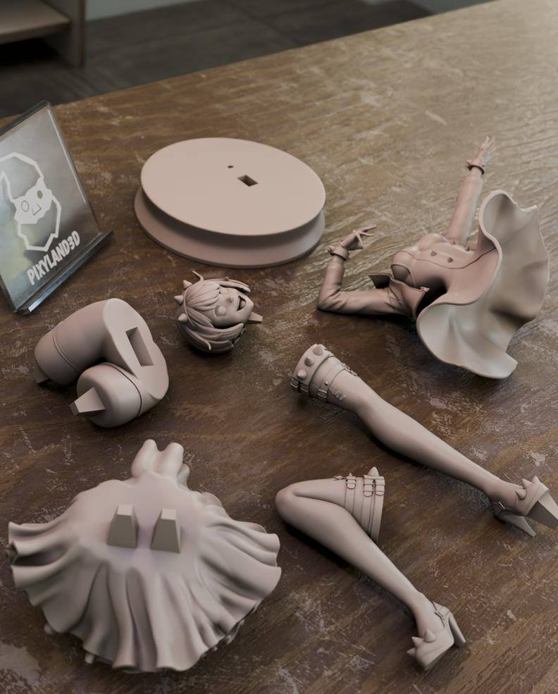
2.足球小将，场景两个，应该是日向小次郎和大空翼吧，不知道有没有认错，做的挺不错的，可以怀旧一下。
链接：https://pan.baidu.com/s/17QWoETn3JUaX9O70hgC_2g
提取码：m525
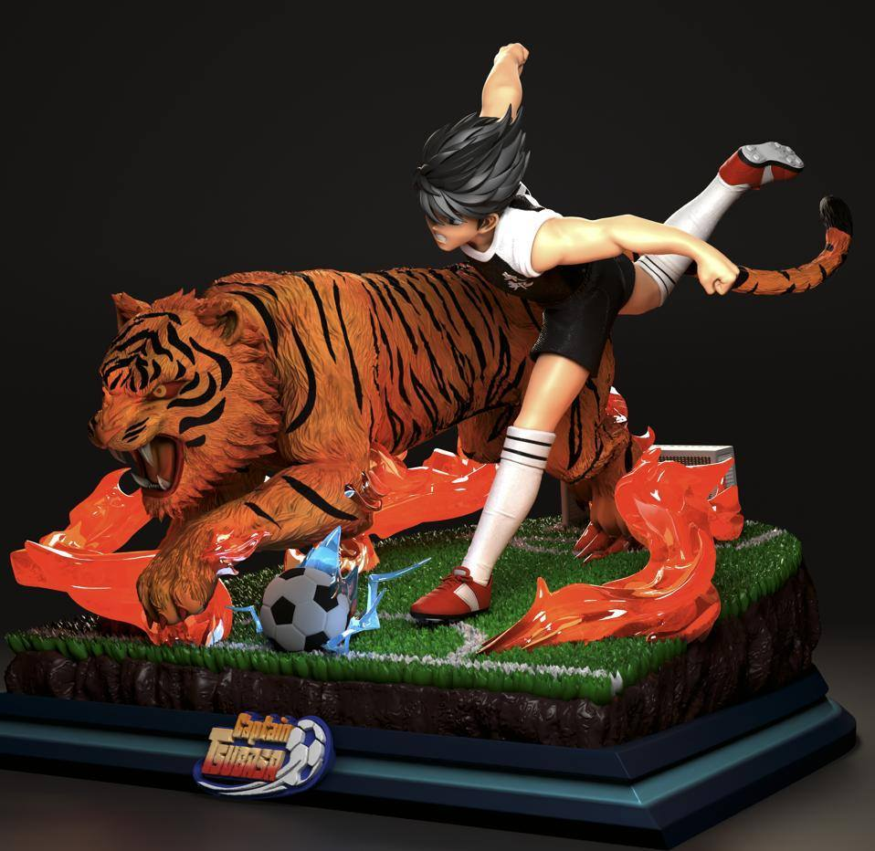
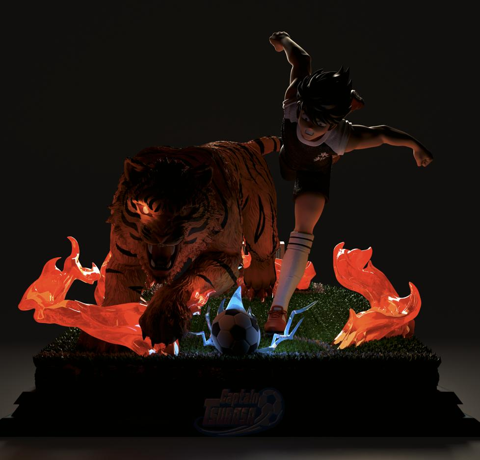
链接：https://pan.baidu.com/s/198FM_6FwLBow8qjeSa5BMg
提取码：iyh2
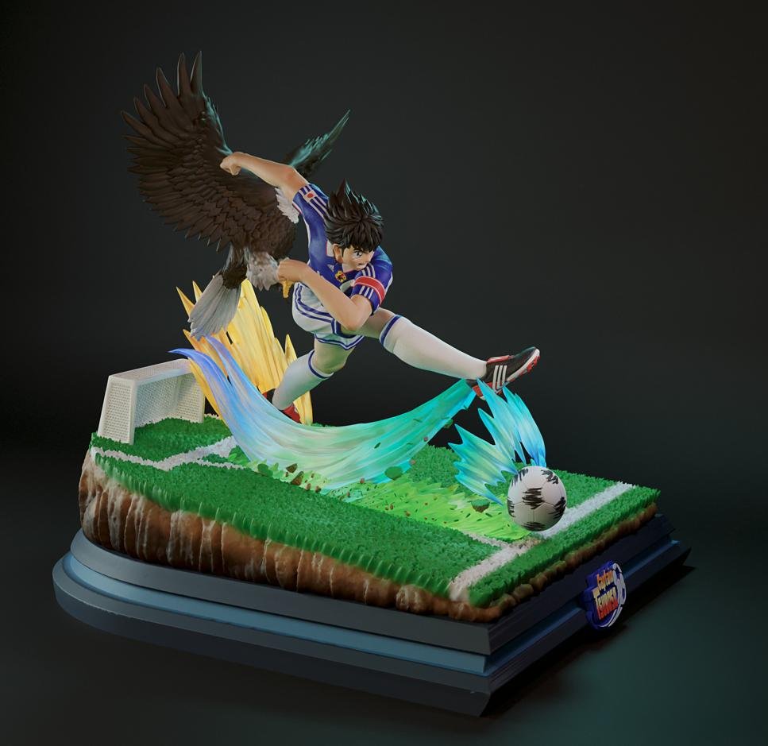
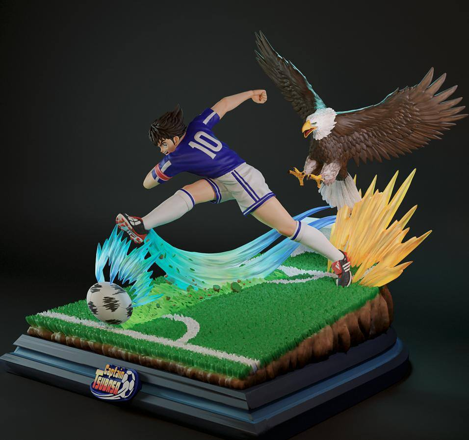

3.最终幻想，克劳德和萨菲罗斯，不是一个工作室做的，不过模型素质都挺不错的，太刀打印难度要求高，还有萨菲罗斯的头发也是个事儿。
链接：https://pan.baidu.com/s/1mycfN6XbF5yjcE-CNrXXBA
提取码：eys6
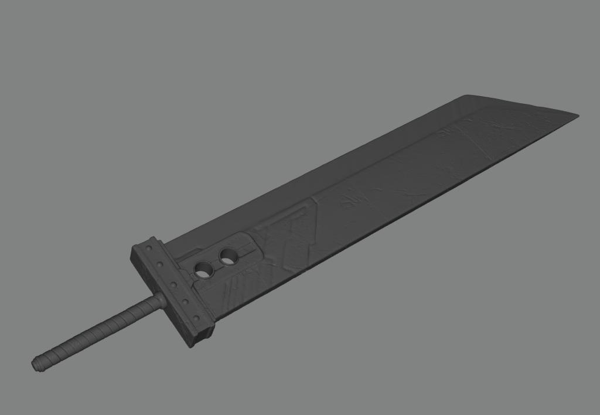

链接：https://pan.baidu.com/s/12xgHw6pmwmpT8Qtaqv8kpA
提取码：oj32
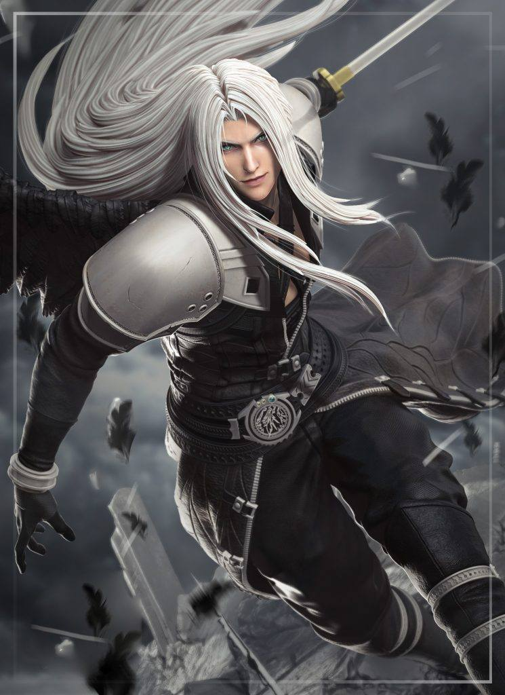
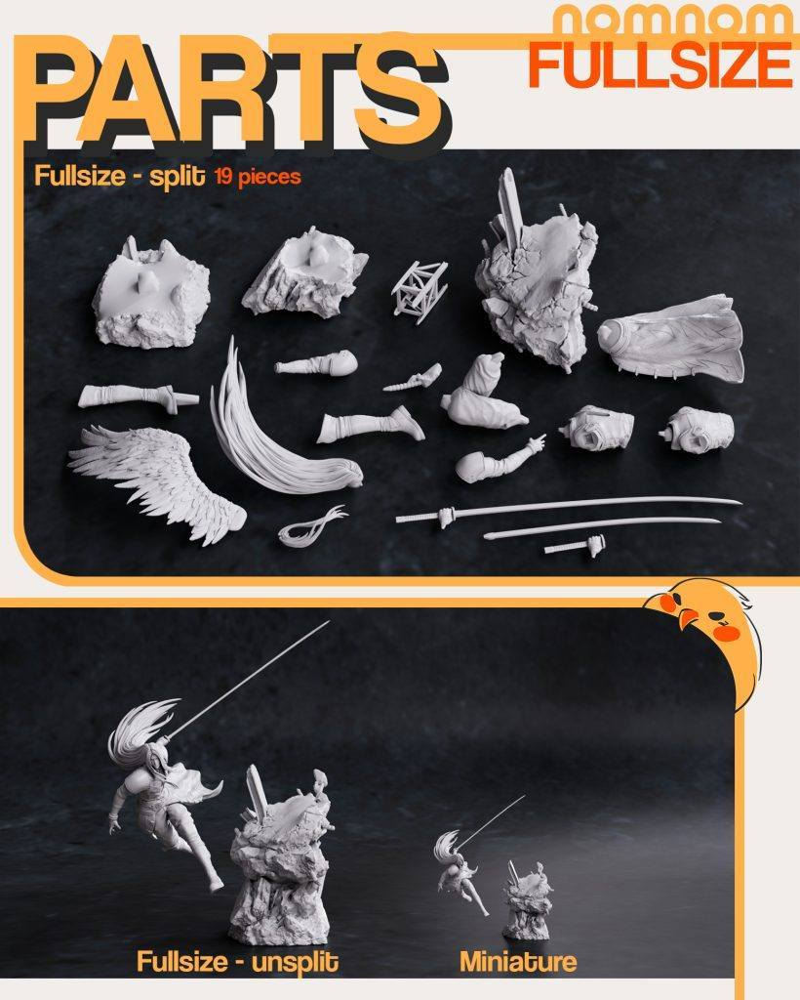
4.弗兰肯斯坦新娘，追加一个群友求的模型，非常不错的精度，素材也很好，并且附有胸像版本，zez工作室的东西没啥毛病，就是文件量都太大了。这个文件要将近2G，后期再继续更新弗兰肯斯坦的另外一半。
链接：https://pan.baidu.com/s/1GnngTk6tZV28QcXVjA4pxw
提取码：6nbj


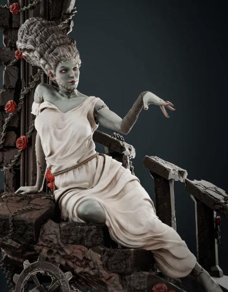
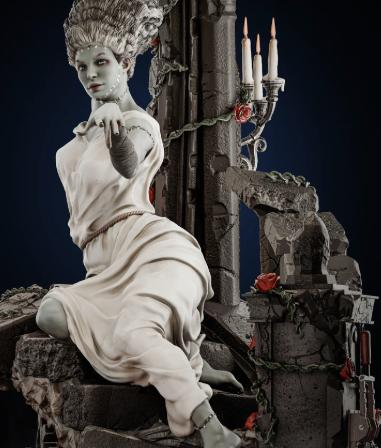
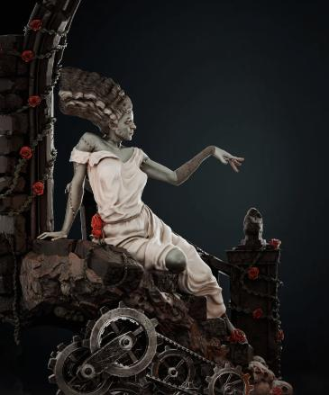

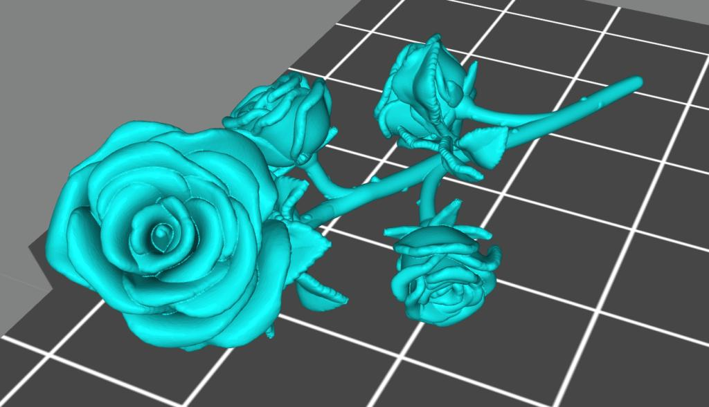
5.颜料架，分享一个比较简易的颜料收纳架。
链接：https://pan.baidu.com/s/1XPv-4yGXRqmZdCJ7IsCQpA
提取码：tyyk

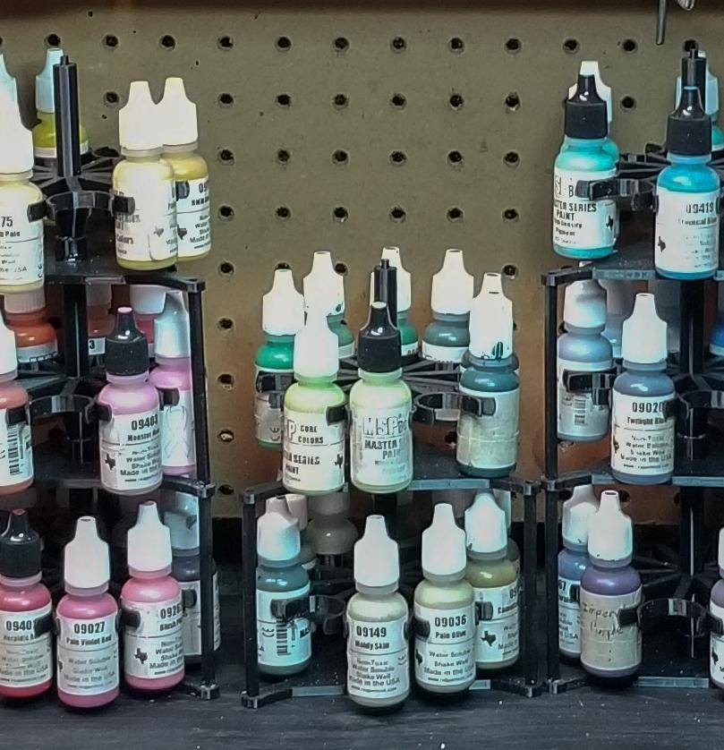
以上内容仅供个人使用（非商用）
ONLY for PERSONAL (NON-COMMERCIAL) use.
加群获得更多免费模型！